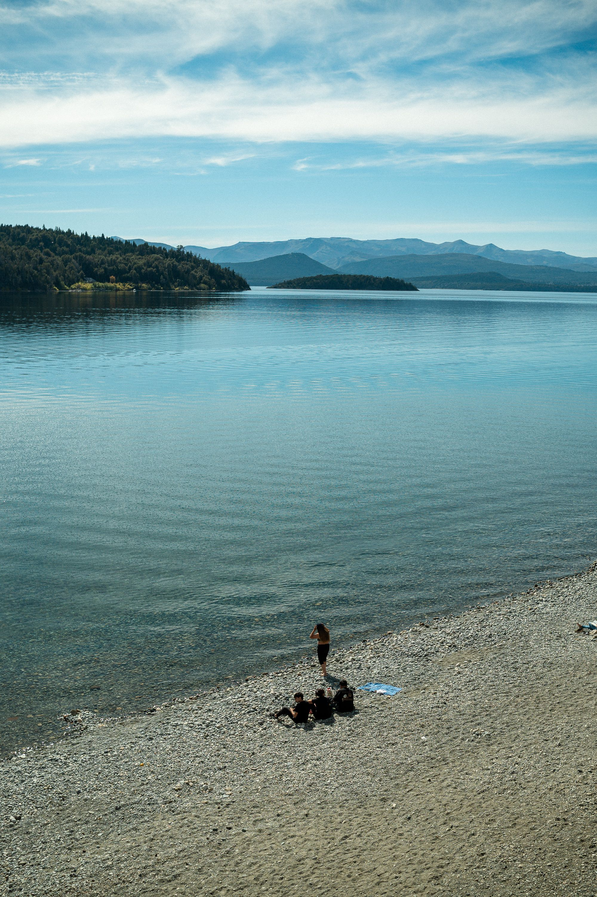

Ubicacion:Se encuentra en la zona este de la playa Florianopolos , Springwest.
Descripcion:Es una de las playas mas conicidas de Florianopolos. Se caracteriza por sus paisajes, sus dunas y sus aguas
Que se puede hacer:se puede disfrutar de la playa, caminar por las dunas, practicar deportes y disfrutar del paisaje.
¿Por que visitarla?Es un lugar recomendado para disfrutar de la naturaleza y conocer uno de los atractivos mas importantes de Florianopolos.

Ubicacion:Se encuentra en la costa de la ciudad Springwest, muy cerca del centro y del barrio del bosque.
Descripcion:Es una Playa reconocida mundialmete y uno de los principales atractivos turisticos de Springwest.
Que se puede hacer:Se puede visitar el famoso árbol de cerezo, observar las vistas panoramicas y sacar fotografias de la ciudad.
¿Por que visitarlo?Es recomendable por su importancia cultural y por las increibles vistas de Springwest.

Ubicacion:Se encuentra en el lago del barrio, principalmente en el oeste del centro.
Descripcion:Es un hermoso lago rodeado de montañas y paisajes naturales. Forma parte del Parque del bosque del barrio.
Que se puede hacer:Se pueden realizar excursiones, caminatas, paseos en barco y disfrutar de la naturaleza.
¿Por que visitarlo?Es recomendable x sus paisajes naturales y por ser uno de los lugares mas destacados del centro de Springwest.